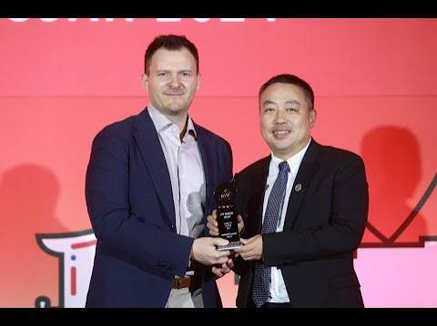
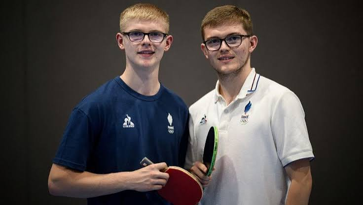
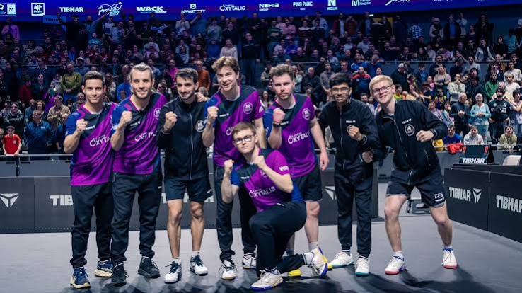

Son entraîneur principal
Il est coaché depuis ses débuts au haut niveau par Nathanaël Molin, qui dirige sa préparation technique et tactique au pôle espoir de Montpellier ainsi que lors des grands tournois internationaux.

Il est coaché depuis ses débuts au haut niveau par Nathanaël Molin, qui dirige sa préparation technique et tactique au pôle espoir de Montpellier ainsi que lors des grands tournois internationaux.

Il s'entraîne au quotidien avec son frère aînée Alexis Lebrun, également membre du Top mondial, avec qui il forme une des meilleures paires de double de la planète.

Licencié à l'Alliance Nîmes-Montpellier TT en Championnat de France(Pro A), il bénificie également de l'expertise technique de son père Stéphane Lebrun et du suivi de staff de l'Equipe de France(préparateur physique, kinésithérapeute et analyste vidéo)
